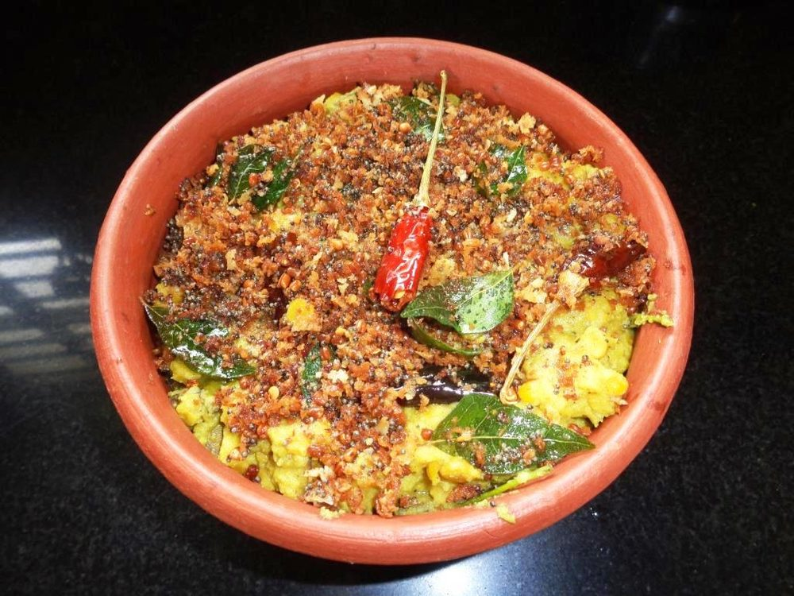

Prep20 min
Cook45 min
Active65 min
Plus1 hr soaking
Serves6
Difficultymoderate
Contains: mustard
Checked against the ingredient list for ten allergens: milk, egg, fish, crustaceans, tree nuts, peanuts, sesame, mustard, soy and gluten. Brands vary, so read the label on anything new to you.
Ingredients
Quantities for 6.
- 100g, soaked 1 hour Chana Dal
- 250g, peeled and cut into 2cm cubes Yam
- 2, peeled and cut into 2cm cubes Raw Banana
- 1 cup grated, divided Coconuthalf ground into the gravy, half roasted for the finish
- 1 tsp Cumin Seeds
- 1.5 tsp, freshly ground Black Pepper
- 3/4 tsp Turmeric
- 1/2 tsp Chilli Powder
- 2, slit Green Chilli
- 1.5 tbsp, grated Jaggerykoottu curry is meant to be faintly sweet
- 2 sprigs Curry Leaves
- 1 tsp Mustard Seeds
- 3, broken Dried Red Chilli
- 3 tbsp Coconut Oil
- 500ml Water
- 1.5 tsp, or to taste Salt
Cookware
stovetop, pressure cooker, kadhai
Before you start
- Soak the chana dal 1 hour in warm water so it cooks in step with the vegetables.
- Oil your hands before peeling the yam to avoid the itch, and drop the cut plantain into water so it does not blacken.
- Grate the coconut and divide it into two equal piles before you start. One for grinding, one for roasting.
Method
- Pressure-cook the drained chana dal with 250ml water and 1/4 tsp turmeric for 3 whistles, then let the pressure drop naturally. The dal should be soft but not collapsed.Undercooked chana dal cannot be rescued later, but mushy dal ruins the texture. Test one grain between your fingers.
- In a separate pot, boil the yam and plantain with the remaining turmeric, black pepper, green chillies, salt and 250ml water for 12-15 minutes until just tender.
- Grind half the coconut with the cumin seeds and 100ml water to a coarse, thick paste. A few seconds only, this should stay slightly textured.
- Add the cooked dal with its liquid to the vegetables and simmer 5 minutes so the two come together.
- Stir in the ground coconut and the jaggery, and cook 8 minutes on medium-low until the gravy is thick and barely runs off a spoon.Koottu curry is a thick, almost dry curry. If it looks like a soup, keep reducing.
- Taste and adjust salt, pepper and jaggery. It should read sweet first, then peppery.
- In a kadhai heat the coconut oil and crackle the mustard seeds, then add the dried red chillies and curry leaves.
- Add the remaining grated coconut to the tempering and roast over medium heat 6-8 minutes, stirring, until it is a deep golden brown and smells toasted.This roasted coconut is what separates koottu curry from every other coconut curry. Take it darker than feels comfortable.
- Tip the whole tempering, coconut and all, over the curry and fold it through.
- Rest 10 minutes covered before serving as part of a sadya or with plain rice.
Storage
Keeps 3 days refrigerated. Reheat on the stovetop with a splash of water; the roasted coconut softens overnight but the flavour deepens.
Nutrition Good estimate
Low protein: 6 g a serving, 7% of the calories
| Per serving179 g | Per 100 g | |
|---|---|---|
| Calories | 355 kcal | 199 kcal |
| Protein | 6.1 g | 3 g |
| Carbohydrate | 58.4 g | 33 g |
| of which sugars | 22.5 g | 12 g |
| Fibre | 7.1 g | 4 g |
| Fat | 13.0 g | 7 g |
| of which saturated | 9.7 g | 5 g |
| of which unsaturated | 1.8 g | 1 g |
Nearest database match used for curry leaves, jaggery. Estimated from raw ingredients using USDA FoodData Central.
Times, yields, allergens and nutrition are guidance. Use your own judgement on doneness and on storing. More in About.